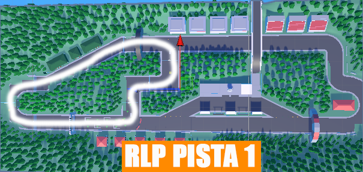
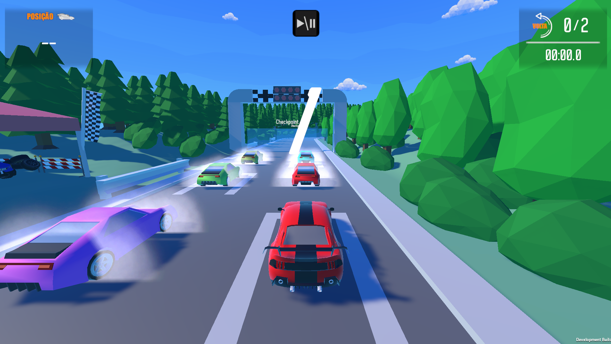

ZTR COMPANY STUDIO apresenta
Race
IACorridas offline
OnlineRanking global
Low PolyVisual leve
Race
Low Poly
Um jogo de corrida estilizado, rápido e competitivo, criado para entregar partidas offline contra IA com resultado enviado para uma dashboard online com ranking e banco de dados.
RACE LOW POLYEM DESENVOLVIMENTO
sobre o projeto
Corrida arcade com identidade própria.
Race Low Poly mistura visual minimalista, pistas estilizadas e competição por ranking. O jogador corre contra bots com IA, finaliza a corrida e o resultado é enviado para uma dashboard online.
Corridas contra IA
Experiência offline com bots, ideal para partidas rápidas e progressão individual.
Resultado online
Ao final da corrida, os dados podem ir para servidor, banco de dados e dashboard.
Ranking competitivo
Sem loja e sem multiplayer direto: foco em tempo, pontuação e colocação no ranking.
Performance leve
Visual low poly pensado para rodar bem e manter uma identidade visual marcante.
recursos principais
Feito para parecer simples, mas funcionar como produto sério.
🏁
Sistema de corrida
Partidas rápidas, bots controlados por IA, posições, voltas e tempo de conclusão.
📊
Dashboard online
Estrutura preparada para exibir jogadores, tempos, posições e histórico.
⚡
Visual otimizado
Estética low poly com foco em velocidade, leveza e boa leitura visual.
sistema online
Ranking conectado à experiência do jogo.
O jogo pode enviar dados da corrida para uma API online. Assim, cada partida vira informação para ranking, estatísticas e histórico dos jogadores.
Race Low Poly Dashboard
LIVE DATA
#
Player
Vitórias
Corridas
mídia do jogo
Área preparada para trailer, prints e imagens oficiais.
Trailer 1 do Race Low Poly

SCREENSHOT
Pistas low poly

SCREENSHOT
Carros e HUD
desenvolvido por
ZTR COMPANY STUDIO
Divisão de desenvolvimento de jogos da ZTR COMPANY, responsável pela criação, identidade e evolução do Race Low Poly.
status do projeto
Race Low Poly está em desenvolvimento.
Site preparado para botão de download, trailer, domínio oficial e conexão com ranking.
Voltar ao topo